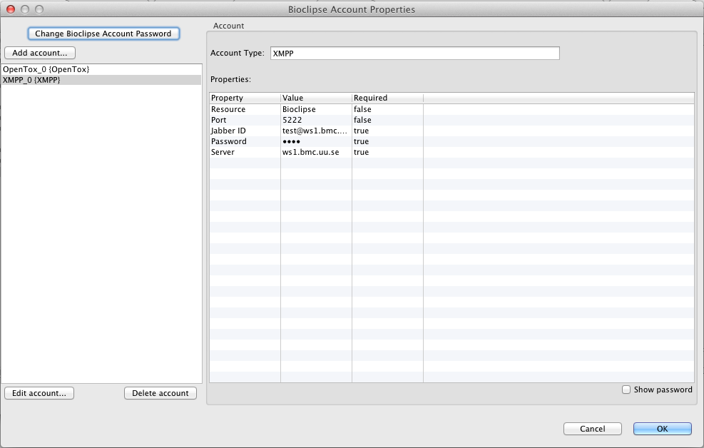

Edit a XMPP-account
Once you created your XMPP-account (see Adding a XMPP-acount to Bioclipse above), it is easy to change the settings. This is done in the user preferences; choose Window > Preferences and then Users in the list to the left. Select the your user account in the list to the right and click on the button Edit... beneath the list with user accounts. You will now be asked for the password, type it in and click OK.After that you will see a dialog that is called "Bioclipse Account Properties" (See also the image below) that list with all the accounts connected to your user account, select your XMPP-account in the list to the left and then you may either edit the settings in the table to the right or by clicking on the button labeled "Edit account..." beneath the list with accounts.
If you want to know more about this dialog, please look at the chapiter "Using Preferences" in the Bioclipse user manual.
